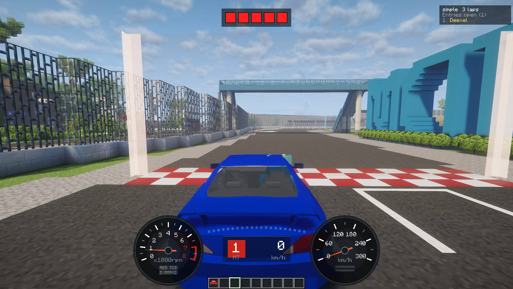
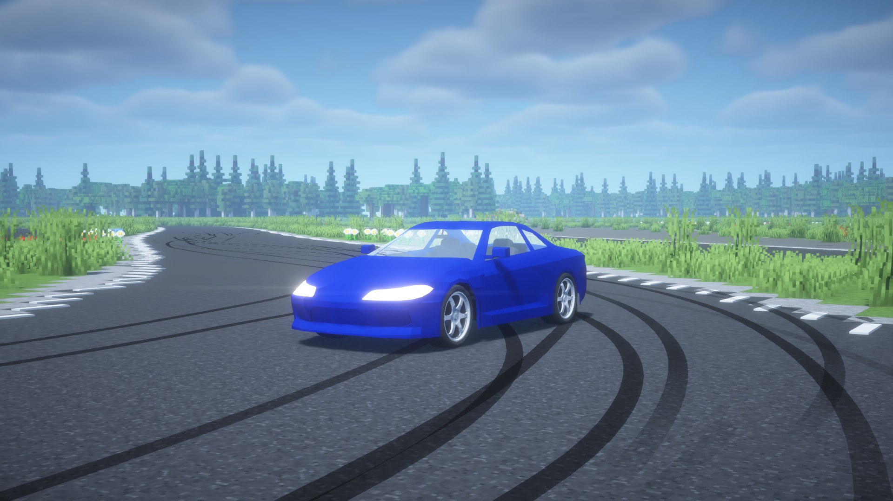
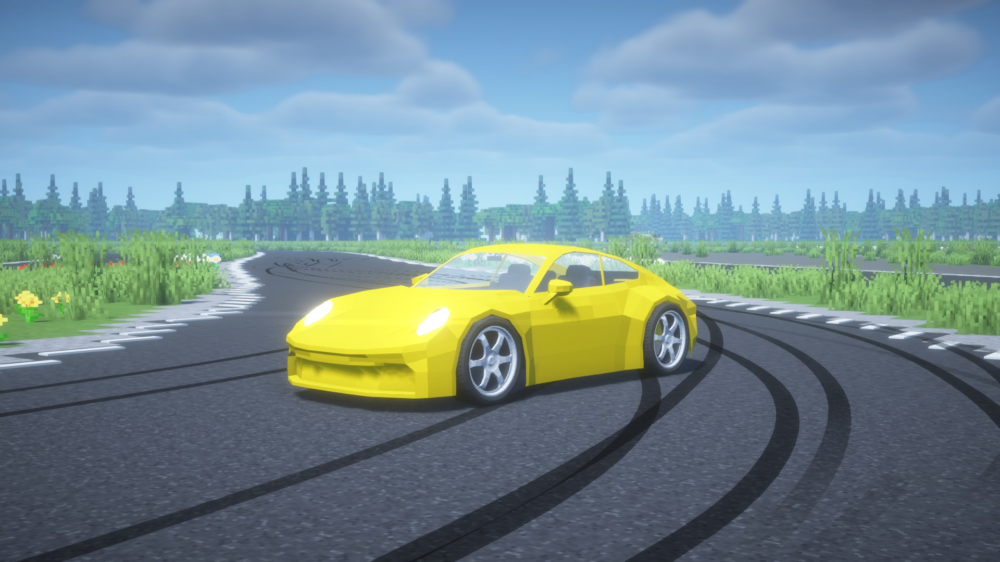
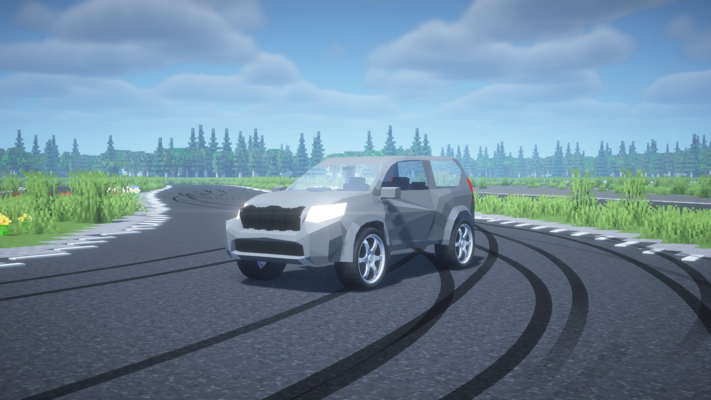

Three cars, one set of physics, measured the same way.同じ物理で走る 3 台を、同じ条件で測りました。
BEST marks the strongest of the three.BEST は 3 台の中でいちばん良い値です。
 Silvia S15 |  911 |  Land Cruiser Prado | |
|---|---|---|---|
| Performance性能 | |||
| 0-100 km/h | 5.25 sBEST | 5.40 s | 11.00 s |
| 0-400 m | 13.37 sBEST | 13.42 s | 17.74 s |
| Top speed最高速度 | 255 km/h | 276 km/hBEST | 143 km/h |
| Power-to-weightパワーウエイトレシオ | 4.27 kg/PSBEST | 4.33 kg/PS | 11.3 kg/PS |
| Engineエンジン | |||
| Max power最高出力 | 281 PS / 6,680 rpm | 335 PS / 6,500 rpmBEST | 186 PS / 3,630 rpm |
| Max torque最大トルク | 350 N·m / 4,200 rpm | 420 N·m / 4,400 rpm | 420 N·m / 2,400 rpm |
| Rev limitレブリミット | 7,000 rpm | 7,400 rpm | 4,600 rpm |
| Idleアイドル回転数 | 800 rpm | 800 rpm | 800 rpm |
| Drivetrain駆動系 | |||
| Layout駆動方式 | AWD4WD | RWD, rear engineRR | AWD4WD |
| Gearbox変速機 | 5-speed AT / MT5 速 AT／MT | 5-speed AT / MT5 速 AT／MT | 5-speed AT / MT5 速 AT／MT |
| Final drive最終減速比 | 4.37 | 4.92 | 5.03 |
| Body and chassisボディ・足まわり | |||
| Weight車両重量 | 1,200 kg | 1,450 kg | 2,100 kg |
| Weight distribution F : R前後重量配分 | 56 : 44 | 40 : 60 | 54 : 46 |
| Wheelbaseホイールベース | 3.12 m | 3.13 m | 3.00 m |
| Trackトレッド | 1.80 m | 2.00 m | 1.90 m |
| Suspension travelサスペンションストローク | 28 cm | 30 cm | 28 cm |
| Tyre diameterタイヤ外径 | 80 cm | 90 cm | 92 cm |
| Max steering angle最大切れ角 | 35° | 35° | 32° |
| Drag area (CdA)空気抵抗（CdA） | 0.78 m² | 0.72 m²BEST | 2.74 m² |
| Get it入手 | |||
| Included in収録 | KurumaMod | Basic Car Pack | Basic Car Pack |
Measured with KurumaMod's own physics on flat tarmac, default setup, no parts, full throttle. Max power is calculated from the torque curve. Sizes are in Minecraft blocks (1 block = 1 m), about 1.2× a real car.性能は KurumaMod の物理演算で、平坦な舗装路・初期セッティング・パーツ無し・全開で測った値です。最高出力はトルク曲線から計算しています。寸法は 1 ブロック = 1m で、実車の約 1.2 倍の大きさです。
KurumaMod and the Basic Car Pack are both free.KurumaMod も Basic Car Pack も無料です。